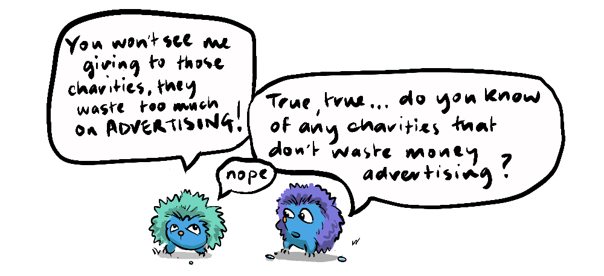
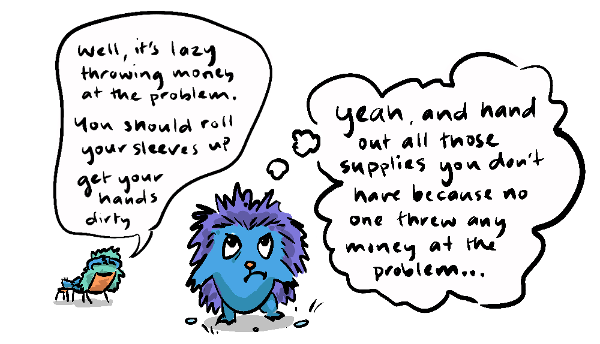

~ should I give to charity or volunteer? ~

with App in live mode!
Let's say a charitable person earns $50/hr and gives $50 to charity every month but they also take one and a half days off work once a year to volunteer at a soup kitchen. The donations and the volunteering each cost this good samaritan 1.5 days income; $600
- Charity: $50 x 12 months = $600
- Volunteering: $400 foregone pay x 1.5 days = $600
But which of these actions has the most impact?
Volunteering gives our fair-hearted friend a great feeling of self-worth, they make some positive relationships and feed some people who otherwise would have been hungry.
Let's say the charitable donation goes to Oxfam. If we consider that Oxfam spends 68% of their donations on humanitarian development (the rest of which is spent on admin, trade, and fundraising) then $600 equates to about $400 of actual aid.
This donation provides school meal programs to 17 children for an entire year*. As a second example, Feeding America are able to feed at least 10 people for $1 by rescuing and redistributing food that would otherwise have gone to waste.
Both the volunteering and the charity are wonderful, but which day and a half is better spent: the donation to charity or volunteering at the soup kitchen?
Let's take the Oxfam donation and those 17 otherwise starving children, every day for a year, that’s 6205 meals, or the Feeding America donation which equates to 6000 meals - quite a day at the soup kitchen!
- Oxfam: 17 meals x 365 days = 6205
- Feeding America: $600 x 10 meals = 6000
For reference, chef Bian Tagal states on Quora that a very basic cooking set up in a student housing cooperative that he managed in Austin Texas took an average of 3 staff cooking and cleaning full time to serve 3 meals to 100 tenants each day. Assuming that a soup kitchen runs at the same efficiency, then a volunteer is providing 100 meals per day. Over 1.5 days that's 150 meals, not including the cost of the food itself.
100 tenants / 3 staff x 3 meals x 1.5 days = 150 meals
Compare this with over 6000 meals from Oxfam or Feeding America.
6000 meals from charity / 150 meals from volunteering = 40 times the benefit
40 times the impact, sounds pretty conclusive; everyone should earn money and give to charity... But, part of the reason Feeding America can provide disproportionately high value service is because they are 100% reliant on volunteers!
What are we to do? Are both approaches equally beneficial? Not quite, it depends on capacity. We have shown that charitable donations are highly efficient, meaning that for those who earn plenty of money, they can have a huge impact by donating to charity. But at the same time, we have also shown that those who are not in financial position to make a significant donation can play a vital part in delivering those services through volunteering. So, the wealthy person is not being lazy by donating rather than "rolling up their sleeves" and the poor person is not powerless - by volunteering they're actually an essential factor in the equation.